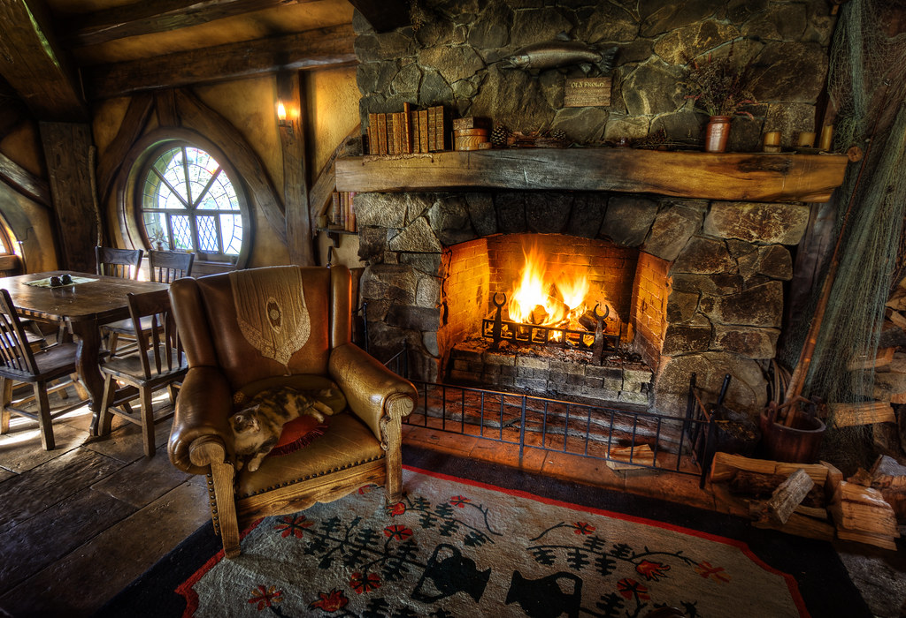
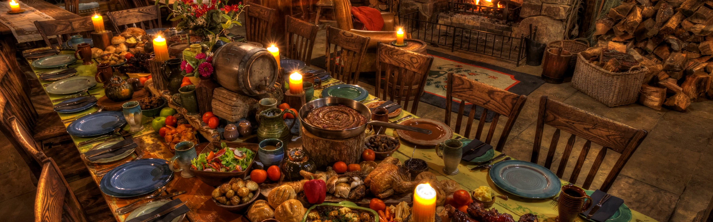
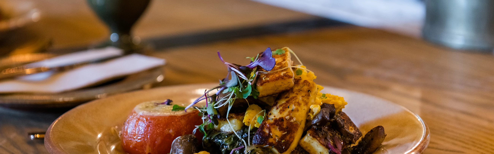
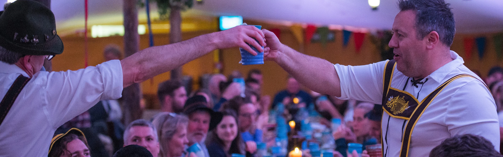

Feasts
The Evening Banquet Tour
Experience Hobbiton™ Movie Set as you have never seen it before with a guided tour through The Shire™ at dusk. Making the most of the remaining daylight, your tour guide will escort you through the 12 acre site, recounting fascinating stories and anecdotes about the trilogies. The tour concludes at The Green Dragon™ Inn with a complimentary beverage from our exclusive Hobbit™ Southfarthing™ range. The guests will then be moved through into The Green Dragon dining room and treated to a banquet feast fit for a Hobbit. The tables will be heaving with traditional Hobbit fare and, as is the tradition in the Shire, second helpings are encouraged. To conclude this premium Hobbiton Movie Set experience, after dinner the guests will re-join their guide to make their way back through the wandering paths of The Shire. The trails will be illuminated by path lighting and handheld lanterns will be provided amongst the guests to help light the way. This stunning journey under moonlight will travel through the village breathtakingly lit up, with Hobbit Hole™ chimneys smoking and lanterns glowing in the darkness.
Second Breakfast Tour
Make the first footsteps in the morning dew on the Movie Set as part of our first tour of the day. Your tour guide will escort you through the 12 acre movie set, recounting fascinating details from filming the trilogies and pointing out the most iconic sites and scenes. You will arrive in to The Green Dragon™ Inn where you will be offered a complimentary beverage from our exclusive Hobbit™ Southfarthing™ range. Explore the intricately detailed Inn and relax in front of the crackling fireplace while we prepare your second breakfast feast. Follow your guide back over the double arch stone bridge to The Millhouse, just across the water from The Green Dragon Inn, where you will be treated to a breakfast spread fit for a Hobbit. The breakfast table will be heaped with seasonal fresh fruit, breads, pastries, preserves and cold meats. A hot breakfast selection featuring an assortment of a Hobbit's favourite breakfast staples including fluffy scrambled eggs, streaky bacon, potatoes, grilled sausages and rosemary mushrooms will be available. Coffee and tea will be available throughout, as you enjoy the rustic, intimate interiors of the Old Mill. After you've had your fill, it's time to make your way back through the wandering paths of The Shire and return to The Shire's Rest, after all, this is only the second of a Hobbit's seven daily meals!
Hobbiton Movie Set Beer Festival 2022
Enjoy a tour at dusk of the Movie Set before arriving at the masterfully recreated Green Dragon™ Inn and receive your specially made beer stein for you to take home. Throughout the evening you can keep your cup filled with our Hobbit™ Southfarthing™ range, which includes two traditional ales, an apple cider and non-alcoholic ginger beer, all handcrafted and exclusive to Hobbiton Movie Set. A range of special ales will be poured exclusively for this event and for those not so fond of ale, you can enjoy our our cider, Middle-earth™ Wine and non-alcoholic beverages. With your stein in hand, explore the masterfully re-created Inn before being escorted to the Party Marquee for a buffet dinner before the real festivities begin. Take a seat at the long banquet tables and enjoy a range of traditional Hobbit fare from our buffet. Our team will ensure your steins are topped up throughout the evening and our themed interactive band will keep you in the spirit, up and dancing throughout the night. At the end of the night you will depart from the Party Marquee where your coach will be waiting.
